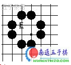
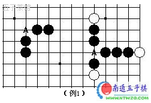
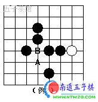
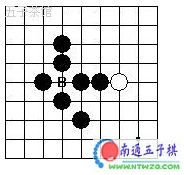
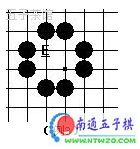
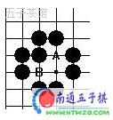
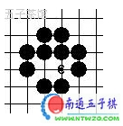
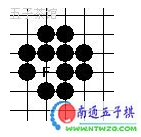

并非所有的禁手判断起来都很容易，有一些就很复杂，甚至环环相扣，令人头晕目眩。比如下图，E点是禁手吗？是不是很复杂，至少一眼是判断不出来的。

（一）“雪飞填子法”判断复杂禁手定理的提出
这里，我提出“雪飞填子法”判断复杂禁手定理：
定理1：一个N层禁手，如果N为奇数，那么最后一层与第一层禁手属性相同，反之，如果N为偶数，那么最后一层与第一层禁手属性相反。
定理2：如果这个N层禁手存在多个方向，则要对每个方向分别进行判断，只要有一个方向是禁手，那么这个N层禁手就是禁手。
首先对这个定理的几个名词进行解释：
1、层的概念。
理解层的概念是理解这个定理的关键，希望大家认真来阅读并加以思考。这里举例来说明。

如图所示，A是禁手吗？相信很多人都能判断出来。一个双活三，一个双四，当然是禁手了。这个就是一层禁手的禁手，一层禁手的判断是一目了然的。

再来看这个图，这是一个二层禁手的例子。A点是禁手吗？大家想想怎么来判断。我们肯定要从定义来下手，落了A点之后是否形成两个双活三。首先斜线那个是活三无疑，现在的关键是判断AB所在的纵线形成的那个三是否是活三，怎么判断呢，那就要看落了A点之后B点是否可以落子。见下图：

判断B点是否可以落子，实际上就是判断B点是否是禁手，我们知道B点是双四禁手的，所以B点不可以落子，所以AB所在的纵线不是活三。由此，我们知道了，A不是禁手。
这个图禁手的判断就是一个二层判断。你想判断A点，就要先判断B点。对应定理中，第一层的判断就是A的判断，最后一层也就是第二层的判断就是B的判断。说到这里，你对层的定义是否有个大概的了解了呢？
下面我们再举个四层判断的例子。

E点是禁手吗？我们从定义来下手，就是落了E点之后是否两个活三？如果是两个活三，那个E点就是禁手，如果不是两个活三，那么E点就不是禁手。试看下图。

落了E点之后，很明显那条斜线的3是活三，还要判断A、B所在的横线和纵线是不是活三，很明显A、B 两个点是对称的，所以只要判断其中一个点就可以了。我们来判断A所在的横线。A点假设可以落子，那么A所在的横线就是活三，对E点而言就是有两个活三了，E点是禁手。反之，A点不能落子，对E点而言只有一个活三，就不是禁手。由此得出结论1：A可以落子，E是禁手；A不可以落子，E不是禁手。
那么A可以落子吗，我们是无法直接判断的，还要进行下一层的判断。试看下图。

落了A点之后，我们可以明显看到一个斜活三和一个4，那么C所在的纵线是活三吗？那就要看C点是否可以落子，假设C点可以落子，那么对A而言就有两个活三，是禁手，那么A是不能落子的，反之，C点不可以落子，对A而言就有一个活三，不是禁手，那么A是可以落子的。套进结论1，得出结论2：C可以落子，A不可以落子，E不是禁手。反之亦然。
那么C是否可以落子呢，我们还是无法直接判断，继续下一层。试看下图。

假设我们在C点落子，很明显对C点而言有一个4和一个3，现在的关键是看F点所在的横线是否可以落子。假设F点可以落子，那么，对C而言就有两个活三，C是禁手，不可以落子的。反之亦然。很明显，F点是不可以落子的，因为双四的存在，所以C点不是禁手，是可以落子的。套进结论2 ：C可以落子，A不可以落子，E不是禁手。所以我们就知道了：E点不是禁手。
这个就是一个四层判断的例子。你要判断E点是否是禁手，就要依次填子分别判断A、C、F点是否是禁手。其中E是第一层判断，F是最后一层判断。这下，你对层的概念明白了吧。
2、第一层和最后一层的含义
什么是第一层？第一层就是你要判断的起始点，比如例1、例2中的A点，例3中的E点。
什么是最后一层？最后一层就是你能简单判断出是否是禁手的那个点，比如例1中的A点，例2中的B点，例3中的F点。当你无法进行简单判断的时候，就要把当前层填子，再判断下一层，直到能简单判断出来为止，这也就得到了最后一层。
3、禁手属性的含义
禁手属性是指是否是禁手，比如最后
例1的第2个A不是4*4禁。
［ 有志青年 于 2008-11-3 20:30:47 时奖励此帖[金币加 20 威望加1］